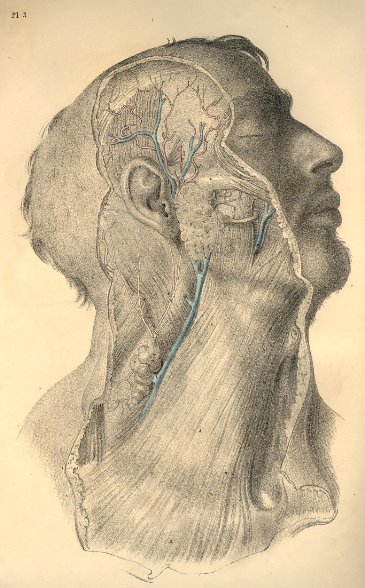
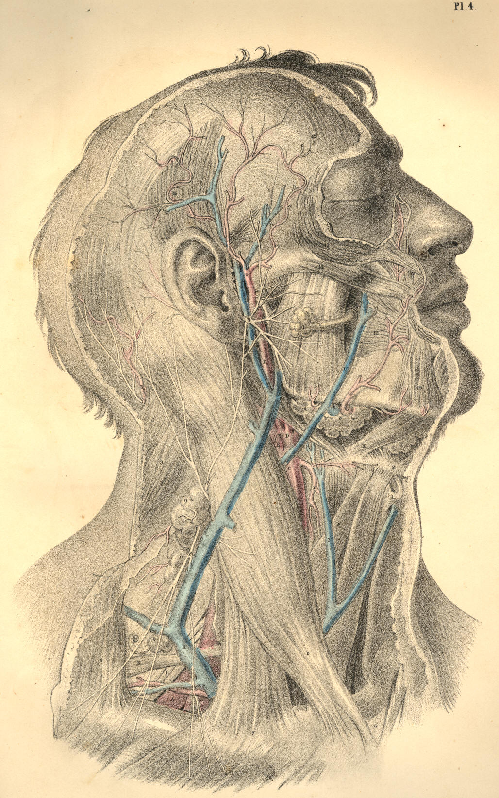

COMMENTARY ON PLATES 3 & 4.
THE SURGICAL FORM OF THE SUPERFICIAL CERVICAL AND FACIAL
REGIONS, AND THE RELATIVE POSITION OF THE PRINCIPAL
BLOOD-VESSELS, NERVES, &c.
When the neck is extended in surgical position, as seen in Plates 3 and
4, its general outline assumes a quadrilateral shape, approaching to a
square. The sides of this square are formed anteriorly by the line
ranging from the mental symphysis to the top of the sternum, and
posteriorly by a line drawn between the occiput and shoulder. The
superior side of this cervical square is drawn by the horizontal ramus
of the lower maxilla, and the inferior side by the horizontal line of
the clavicle. This square space, R 16, 8, 6, Plate 4, is halved by a
diagonal line, drawn by the sterno-cleido-mastoid muscle B, which cuts
the square into two triangles. In the anterior triangle, F 16, 6, Plate
4, is located the superficial common carotid artery, C, and its
branches, D, with accompanying nerves. In the posterior triangle, 9, 8,
6, Plate 4, is placed the superficial subclavian artery, A, its
branches, L M, and the brachial plexus of nerves, I. Both these
triangles and their contents are completely sheathed by that thin
scarf-like muscle, named platysma myoides, A A, Plate 3, the fibres of
which traverse the neck slantingly in a line, O A, of diagonal direction
opposite to and secant of that of the sterno-mastoid muscle.
When the skin and subcutaneous adipose membrane are removed by careful
dissection from the cervical region, certain structures are exposed,
which, even in the undissected neck, projected on the superficies, and
are the unerring guides to the localities of the blood-vessels and
nerves, &c. In Plate 4, the top of the sternum, 6; the clavicle, 7;
the
"Pomum Adami," 1; the lower maxilla at V; the hyoid bone, Z; the
sterno-cleido-mastoid muscle, B; and the clavicular portion of the
trapezius muscle, 8; will readily be felt or otherwise recognised
through the skin, &c. When these several points are well considered
in
their relation to one another, they will correctly determine the
relative locality of those structures--the blood-vessels, nerves,
&c.,
which mainly concern the surgical operation.
The middle point, between 7, the clavicle, and 6, the sternum, of Plate
4, is marked by a small triangular space occurring between the
clavicular and sternal divisions of the sterno-cleido-mastoid muscle.
This space marks the situation (very generally) of the bifurcation of
the innominate artery into the subclavian and common carotid arteries of
the right side; a penetrating instrument would, if passed into this
space at an inch depth, pierce first the root of the internal jugular
vein, and under it, but somewhat internal, the root of either of these
great arterial vessels, and would wound the right vagus nerve, as it
traverses this region. For some extent after the subclavian and carotid
vessels separate from their main common trunk, they lie concealed
beneath the sterno-mastoid muscle, B, Plate 4, and still deeper beneath
the sternal origins of the sterno-hyoid muscle, 5, and sterno-thyroid
muscle, some of whose fibres are traceable at the intervals. The
omo-hyoid muscle and the deep cervical fascia, as will be presently
seen,
conceal these vessels also.
The subclavian artery, A, Plate 4, first appears superficial to the
above-named muscles of the cervical region just at the point where,
passing from behind the scalenus muscle, N, Plate 4, which also conceals
it, it sinks behind the clavicle. The exact locality of the artery in
this part of its course would be indicated by a finger's breadth
external to the clavicular attachment of the sterno-mastoid muscle. The
artery passes beneath the clavicle at the middle of this bone, a point
which is indicated in most subjects by that cellular interval occurring
between the clavicular origins of the deltoid and great pectoral
muscles.
The posterior cervical triangle, 9, 8, 7, Plate 4, in which the
subclavian artery is situated, is again subdivided by the muscle
omo-hyoid into two lesser regions, each of which assumes somewhat of a
triangular shape. The lower one of these embraces the vessel, A, and
those nerves of the brachial plexus, I, which are in contact with it.
The posterior belly of the omo-hyoid muscle, K, and the anterior
scalenus muscle, N, form the sides and apex of this lesser triangular
space, while the horizontal clavicle forms its base. This region of the
subclavian artery is well defined in the necks of most subjects,
especially when the muscles are put in action. In lean but muscular
bodies, it is possible to feel the projection of the anterior scalenus
muscle under the skin, external to the sterno-mastoid. The form of the
omo-hyoid is also to be distinguished in the like bodies. But in all
subjects may be readily recognised that hollow which occurs above the
clavicle, and between the trapezius, 8, and the sterno cleido-mastoid, 7
B, in the centre of which hollow the artery lies.
The contents of the larger posterior cervical triangle, formed by B, the
sterno-mastoid before; 9, the splenius; and 8, the trapezius behind,
and by the clavicle below, are the following mentioned structures--viz.,
A, the subclavian artery, in the third part of its course, as it emerges
from behind N, the scalenus anticus; L, the transversalis colli artery,
a branch of the thyroid axis, which will be found to cross the
subclavian vessel at this region; I, the brachial plexus of nerves,
which lie external to and above the vessel; H, the external jugular
vein, which sometimes, in conjunction with a plexus of veins coming from
behind the trapezius muscle, entirely conceals the artery; M, the
posterior scapular artery, a branch of the subclavian, given off from
the vessel after it has passed from behind the scalenus muscle; O,
numerous lymphatic glands; P, superficial descending branches of the
cervical plexus of nerves; and Q, ascending superficial branches of the
same plexus. All these structures, except some of the lymphatic glands,
are concealed by the platysma myoides A, as seen in Plate 3, and beneath
this by the cervical fascia, which latter shall be hereafter more
clearly represented.
In somewhat the same mode as the posterior half of the omo-hyoid
subdivides the larger posterior triangle into two of lesser dimensions,
the anterior half of the same muscle divides the anterior triangle into
two of smaller capacity.
The great anterior triangle, which is marked as that space inclosed
within the points, 6, the top of the sternum, the mental symphysis and
the angle of the maxilla; and whose sides are marked by the median line
of the neck before, the sterno-mastoid behind, and the ramus of the jaw
above, contains C, the common carotid artery, becoming superficial from
beneath the sterno-mastoid muscle, and dividing into E, the internal
carotid, and D, the external carotid. The anterior jugular vein, 3, also
occupies this region below; while some venous branches, which join the
external and internal jugular veins, traverse it in all directions, and
present obstacles to the operator from their meshy plexiform arrangement
yielding, when divided, a profuse haemorrhage.
The precise locality at which the common carotid appears from under the
sterno-mastoid muscle is, in almost all instances, opposite to the
thyroid cartilage. At this place, if an incision, dividing the skin,
platysma and some superficial branches of nerves, be made along the
anterior border of the sterno-mastoid muscle, and this latter be turned
a little aside, a process of cervical fascia, and beneath it the sheath
of the carotid artery, will successionally disclose themselves. In many
bodies, however, some degree of careful search requires to be made prior
to the full exposure of the vessel in its sheath, in consequence of a
considerable quantity of adipose tissue, some lymphatic glands, and many
small veins lying in the immediate vicinity of the carotid artery and
internal jugular vein. This latter vessel, though usually lying
completely concealed by the sterno-mastoid muscle, is frequently to be
seen projecting from under its fore part. In emaciated bodies, where the
sterno-mastoid presents wasted proportions, it will, in consequence,
leave both the main blood-vessels uncovered at this locality in the
neck.
The common carotid artery ascends the cervical region almost
perpendicularly from opposite the sterno-clavicular articulation to the
greater cornu of the os hyoides. For the greater part of this extent it
is covered by the sterno-mastoid muscle; but as this latter takes an
oblique course backwards to its insertion into the mastoid process,
while the main blood-vessel dividing into branches still ascends in its
original direction, so is it that the artery becomes uncovered by the
muscle. Even the root of the internal carotid, E, may be readily reached
at this place, where it lies on the same plane as the external carotid,
but concealed in great part by the internal jugular vein. It would be
possible, while relaxing the sterno-mastoid muscle, to compress either
the common carotid artery or its main branches against the cervical
vertebral column, if pressure were made in a direction backwards and
inwards. The facial artery V, which springs from the external carotid,
D, may be compressed against the horizontal ramus of the lower jaw-bone
at the anterior border of the masseter muscle. The temporal artery, as
it ascends over the root of the zygoma, may be compressed effectually
against this bony point.
The external jugular vein, H, Plate 4, as it descends the neck from the
angle of the jaw obliquely backwards over the sterno-mastoid muscle, may
be easily compressed and opened in any part of its course. This vein
courses downwards upon the neck in relation to that branch of the
superficial cervical plexus, named auricularis magnus nerve, Q, Plate 4,
G, Plate 3. The nerve is generally situated behind the vein, to which it
lies sometimes in close proximity, and is liable, therefore, to be
accidentally injured in the performance of phlebotomy upon the external
jugular vein. The coats of the external jugular vein, E, Plate 3, are
said to hold connexion with some of the fibres of the platysma-myoides
muscle, A A, Plate 3, and that therefore, if the vessel be divided
transversely, the two orifices will remain patent for a time.
The position of the carotid artery protects the vessel, in some degree,
against the suicidal act, as generally attempted. The depth of the
incision necessary to reach the main blood-vessels from the fore part of
the neck is so considerable that the wound seldom effects more than the
opening of some part of the larynx. The ossified condition of the
thyroid and cricoid parts of the laryngeal apparatus affords a
protection to the vessels. The more oblique the incision happens to be,
the greater probability is there that the wound is comparatively
superficial, owing to the circumstance of the instrument having
encountered one or more parts of the hyo-laryngeal range; but woeful
chance sometimes directs the weapon horizontally through that membranous
interval between the thyroid and hyoid pieces, in which case, as also in
that where the laryngeal pieces persist permanently cartilaginous, the
resistance to the cutting instrument is much less.
The anatomical position of the parotid, H, Plate 3, and submaxillary
glands, W, Plate 4, is so important, that their extirpation, while in a
state of disease, will almost unavoidably concern other principal
structures. Whether the diseased parotid gland itself or a lymphatic
body lying in connexion with it, be the subject of operation, it seldom
happens that the temporo-maxillary branch of the external carotid, F,
escapes the knife. But an accident, much more liable to occur, and one
which produces a great inconvenience afterwards to the subject, is that
of dividing the portio-dura nerve, S, Plate 4, at its exit from the
stylo-mastoid foramen, the consequence being that almost all the muscles
of facial expression become paralyzed. The masseter, L, Plate 3,
pterygoid, buccinator, 15, Plate 4, and the facial fibres of the
platysma muscles, A O, Plate 3, still, however, preserve their power, as
these structures are innervated from a different source. The orbicularis
oculi muscle, which is principally supplied by the portio-dura nerve, is
paralyzed, though it still retains a partial power of contraction, owing
to the anatomical fact that some terminal twigs of the third or motor
pair of nerves of the orbit branch into this muscle.
The facial artery, V, and the facial vein, U, Plate 4, are in close
connexion with the submaxillary gland. Oftentimes they traverse the
substance of it. The lingual nerve and artery lie in some part of their
course immediately beneath the gland. The former two are generally
divided when the gland is excised; the latter two are liable to be
wounded in the same operation.
DESCRIPTION OF PLATES 3 & 4.
PLATE 3.
A A A. Subcutaneous platysma myoides muscle, lying on the face, neck,
and upper part of chest, and
covering the structures contained
in the two surgical triangles of
the neck.
B. Lip of the thyroid cartilage.
C. Clavicular attachment of the trapezius muscle.
D. Some lymphatic bodies of the post triangle.
E. External jugular vein.
F. Occipital artery, close to which are seen some branches of the
occipitalis minor nerve of the cervical plexus.
G. Auricularis magnus nerve of the superficial cervical plexus.
H. Parotid gland.
I. Temporal artery, with its accompanying vein.
K. Zygoma.
L. Masseter muscle, crossed by the parotid duct, and some fibres of
platysma.
M. Facial vein.
N. Buccinator muscle.
O. Facial artery seen through fibres of platysma.
P. Mastoid half of sterno-mastoid muscle.
Q. Locality beneath which the commencements of the subclavian and
carotid arteries lie.
R. Locality of the subclavian artery in the third part of its course.
S. Locality of the common carotid artery at its division into internal
and external carotids.

Plate 3
PLATE 4.
A. Subclavian artery passing beneath the clavicle, where it is
crossed
by some blood-vessels and nerves.
B. Sternal attachment of the sterno-mastoid muscle, marking the
situation of the root of common carotid.
C. Common carotid at its point of division, uncovered by
sterno-mastoid.
D. External carotid artery branching into lingual, facial,
temporal,
and occipital arteries.
E. Internal carotid artery.
F. Temporo-maxillary branch of external carotid artery.
G. Temporal artery and temporal vein, with some ascending temporal
branches of portio-dura nerve.
H. External jugular vein descending from the angle of the jaw,
where it
is formed by the union of temporal and maxillary
veins.
I. Brachial plexus of nerves in connexion with A, the subclavian
artery.
K. Posterior half of the omo-hyoid muscle.
L. Transversalis colli artery.
M. Posterior scapular artery.
N. Scalenus anticus muscle.
O. Lymphatic bodies of the posterior triangle of neck.
P. Superficial descending branches of the cervical plexus of
nerves.
Q. Auricularis magnus nerve ascending to join the portio-dura.
R. Occipital artery, accompanied by its nerve, and also by some
branches of the occipitalis minor nerve, a branch of
cervical plexus.
S. Portio-dura, or motor division of seventh pair of cerebral
nerves.
T. Parotid duct.
U. Facial vein.
V. Facial artery.
W. Submaxillary gland.
X. Digastric muscle.
Y. Lymphatic body.
Z. Hyoid bone.
1. Thyroid cartilage.
2. Superior thyroid artery.
3. Anterior jugular vein.
4. Hyoid half of omo-hyoid muscle.
5. Sterno-hyoid muscle.
6. Top of the sternum.
7. Clavicle.
8. Trapezius muscle.
9. Splenius capitis and colli muscle.
10. Occipital half of occipito-frontalis muscle.
11. Levator auris muscle.
12. Frontal half of occipito-frontalis muscle.
13. Orbicularis oculi muscle.
14. Zygomaticus major muscle.
15. Buccinator muscle.
16. Depressor anguli oris muscle.
(Page 16)

Plate 4
COMMENTARY ON PLATES 5
& 6